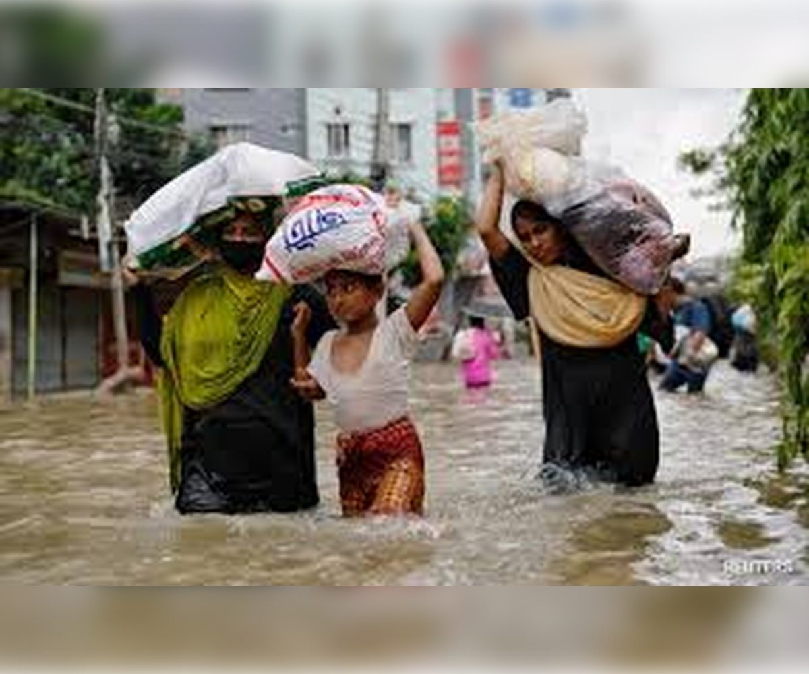
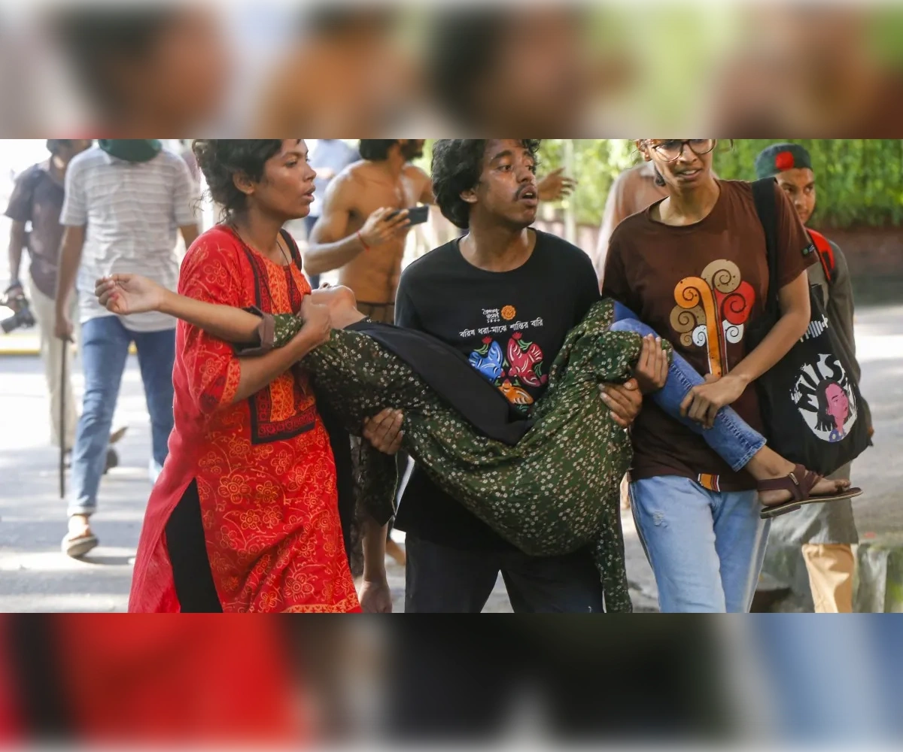

🌍 Welcome to Donate Bangladesh
A Digital Platform for Compassion and Action
"Donate Bangladesh" is more than just a website — it’s a bridge between those who want to help and those who desperately need it. Launched in 2020, during a time of rising global challenges and local crises, Donate Bangladesh emerged as a humanitarian response to the growing need for fast, transparent, and trustworthy donation channels. Since its creation, this platform has enabled thousands of generous individuals to extend their hands to strangers — to donate not just money, but hope.
🧭 Our Mission: People Helping People
Every day, someone in Bangladesh faces a crisis.
It could be the sudden devastation of a flood, a family losing their home to fire, or a child requiring urgent
surgery. Unfortunately, many of these people have no place to turn to. On the other hand, there are countless
kind-hearted individuals who want to help — but they don’t know where , how, or who to trust.
That’s where Donate Bangladesh steps in.
We exist to make donation simple, safe, and impactful. Whether it's a large-scale disaster or a personal
emergency, our platform ensures that help reaches the right hands, at the right time.
Since its creation, this platform has enabled thousands of generous individuals to extend their hands to
strangers — to donate not just money, but hope.
📖 Our Story: Born from Crisis, Built on Compassion
Donate Bangladesh was founded in 2020 — a year
the world will never forget. The COVID-19 pandemic was sweeping across the globe, and communities in Bangladesh
were hit hard. Jobs were lost, families went hungry, and medical emergencies became more common than ever.
In the face of this suffering, something beautiful happened — people wanted to help. But many didn’t know how to
make sure their support would actually reach those in need.
So, we built a solution. A clean, user-friendly, trustworthy donation platform where anyone, from anywhere,
could support someone in need. No middlemen, no confusion — just pure, people-to-people kindness.
🌐 Join the Movement
Whether you are:
1. A donor looking for a cause to support,
2. A person in crisis needing emergency assistance,
3. A volunteer ready to make a difference,
4. Or just someone who believes in a better, more united Bangladesh,
Donate Bangladesh welcomes you.
Our dream is simple — a Bangladesh where no one suffers alone, and help is always just one click away.
🔐 Safety, Trust & Transparency
We know trust is everything. That’s why we are committed to:
1. Strict campaign screening before approval
2. Secure online payment gateways (bKash, Nagad, Card, etc.)
3. Donor privacy and data protection
4. Continuous monitoring and updates on every live campaign
We also invite community feedback, and we are constantly improving based on your input.
📣 Your Help Matters
Every donation tells a story. Whether you give 50 Taka or 50,000, you are changing someone’s life. You are giving a family hope, a student a future, and a community strength.
"Donate Bangladesh" is not just a platform — it’s a movement of empathy, of ordinary people doing extraordinary things.
Together, we can build a Bangladesh where no one is left behind.
Cause based Giving

Flood at Noakhali
NEW
Severe flooding has struck Noakhali, submerging homes and displacing thousands.

TCB
UPCOMING
The main mission of TCB is to maintain a buffer stock of some selected essential commodities add sell them to stabilize the market price.

2024 Bangladesh quota reform movement
Old
This article is about the movement primarily focused on quota reform. For that ultimately overthrew Sheikh Hasina, see Non-cooperation movement (2024).